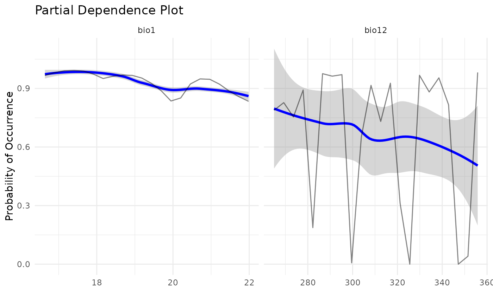

Obtain the Partial Dependence Plots (PDP) to each variable.
Usage
pdp_sdm(i, spp = NULL, algo = NULL, variables_selected = NULL, mean.only = FALSE)
get_pdp_sdm(i, spp = NULL, algo = NULL, variables_selected = NULL)Arguments
- i
A
input_sdmobject.- spp
A
charactervector with species names to obtain the PDPs. IfNULL(standard), the first species inspecies_names(i)is used.- algo
A
charactercontaining the algorithm to obtain the PDP. IfNULL(standard) all algorithms are mixed.- variables_selected
A
character. If there is a subset of predictors that should be ploted in this, it can be informed using this parameter.- mean.only
Boolean. Should only the mean curve be plotted or a curve to each run should be included? Standard is FALSE.
Examples
# Create sdm_area object:
sa <- sdm_area(parana, cell_size = 100000, crs = 6933)
#> ! Making grid over study area is an expensive task. Please, be patient!
#> ℹ Using GDAL to make the grid and resample the variables.
# Include predictors:
sa <- add_predictors(sa, bioc) |> select_predictors(c("bio1", "bio12"))
#> ! Making grid over the study area is an expensive task. Please, be patient!
#> ℹ Using GDAL to make the grid and resample the variables.
# Include scenarios:
sa <- add_scenarios(sa)
# Create occurrences:
oc <- occurrences_sdm(occ, crs = 6933) |> join_area(sa)
# Create input_sdm:
i <- input_sdm(oc, sa)
# Pseudoabsence generation:
i <- pseudoabsences(i, method="random", n_set=3)
# Custom trainControl:
ctrl_sdm <- caret::trainControl(method = "repeatedcv",
number = 2,
repeats = 1,
classProbs = TRUE,
returnResamp = "all",
summaryFunction = summary_sdm,
savePredictions = "all")
# Train models:
i <- train_sdm(i, algo = c("naive_bayes"), ctrl=ctrl_sdm)
#> Warning: Partial AUC correction not defined for ROC curves below the diagonal.
#> Warning: Partial AUC correction not defined for ROC curves below the diagonal.
#> Warning: Partial AUC correction not defined for ROC curves below the diagonal.
#> Warning: Partial AUC correction not defined for ROC curves below the diagonal.
#> Warning: Partial AUC correction not defined for ROC curves below the diagonal.
#> Warning: There were missing values in resampled performance measures.
#> Warning: Partial AUC correction not defined for ROC curves below the diagonal.
#> Warning: Partial AUC correction not defined for ROC curves below the diagonal.
#> Warning: Partial AUC correction not defined for ROC curves below the diagonal.
#> Warning: Partial AUC correction not defined for ROC curves below the diagonal.
#> Warning: Partial AUC correction not defined for ROC curves below the diagonal.
#> Warning: There were missing values in resampled performance measures.
#> Warning: Partial AUC correction not defined for ROC curves below the diagonal.
#> Warning: Partial AUC correction not defined for ROC curves below the diagonal.
#> Warning: Partial AUC correction not defined for ROC curves below the diagonal.
#> Warning: Partial AUC correction not defined for ROC curves below the diagonal.
#> Warning: Partial AUC correction not defined for ROC curves below the diagonal.
#> Warning: There were missing values in resampled performance measures.
# PDP plots:
pdp_sdm(i)
#> `geom_smooth()` using method = 'loess' and formula = 'y ~ x'

get_pdp_sdm(i)
#> $naive_bayes
#> # A tibble: 132 × 4
#> id yhat variable value
#> <chr> <dbl> <chr> <dbl>
#> 1 m1.1 0.967 bio1 16.6
#> 2 m1.1 0.981 bio1 16.9
#> 3 m1.1 0.990 bio1 17.1
#> 4 m1.1 0.992 bio1 17.4
#> 5 m1.1 0.989 bio1 17.7
#> 6 m1.1 0.973 bio1 17.9
#> 7 m1.1 0.951 bio1 18.2
#> 8 m1.1 0.962 bio1 18.4
#> 9 m1.1 0.969 bio1 18.7
#> 10 m1.1 0.967 bio1 18.9
#> # ℹ 122 more rows
#>